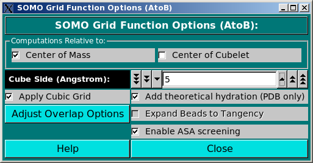

| |
Manual |

This module controls the parameters of the Build AtoB (Grid) Bead Model and Build Grid Bead Model routines.
In the Computations Relative to: section, the user selects if the coordinates of each bead built by the grid routine have to be placed in the Center of Mass (default) between all atoms (or beads) whose centers fall within the cubelet, or in the Center of Cubelet. These options are obviously mutually exclusive.
The Cube Side (Angstrom): field determines the dimension of the grid cubelets (default: 5 A).
The next three independently selectable options controls other steps or features of the grid-based method:
Apply Cubic Grid allows the grid procedure to be executed (deafult: active). It could be deselected to allow the use of the Grid module for overlap removal of a previously loaded bead model.
Add Theorethical Hydration (PDB only). This is a newly implemented routine that uses the atomic hydration definitions present in the new version of the somo.residue table (see here). It basically adds the volume of the water molecules theoretically bound to each atom within a cubelet to their anhydrous volumes. This enhancement greatly improves the computation of the hydrodynamic parameters using the Grid (AtoB) method (Brookes et al., Macromol. Biosci. 10:746-753, 2010).
The Expand Bead to Tangency routine has not been implemented at this stage, therefore this button is not available. The idea behind this procedure was to cope with the voids sometimes generated between beads by the Grid approach. More explanations will be provided once the routine will be fully implemented and tested.
The Adjust Overlap Options button will open the Grid Bead Overlap Reduction Options module, allowing the setting of the various parameters governing the execution of the overlap removal routines.
Finally, the Enable ASA Screening option will enable the new ASA screening routine that we have developed to improve the Build AtoB (Grid) Bead Model performance. This will allow a better treatment of the beads during the overlap removal phase (see here), by first screening the beads placed in the grid for being exposed or buried (see here). Importantly, the Outward Translation can be applied during the overlap removal phase of the exposed beads, leading to much better reproduction of the experimental parameters nearly independently of the grid size chosen (Brookes et al., Macromol. Biosci. 10:746-753, 2010). If this checkbox is deselected, a basic mode is operational, in which the cubic grid is applied, beads are generated and labeled all as being buried, and the overlaps are all removed in one pass. The ASA re-check routine must be then active to properly classify the beads as being exposed or buried following overlap removal. This step is controlled by its own parameters, see here.
This document is part of the UltraScan Software Documentation
distribution.
Copyright © notice.
The latest version of this document can always be found at:
Last modified on March 14, 2012.